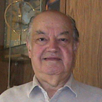
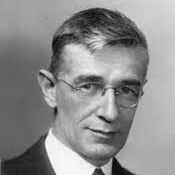

|
 |  |
 |
 |
 |  |
 |
Vinton Gray Cerf was born in New Haven, Connecticut on June 23, 1943 to Muriel (née Gray) and Vinton Thurston Cerf. Cerf attended Van Nuys High School with Jon Postel and Steve Crocker. While in high school, Cerf worked for Rocketdyne for six months on the Apollo program, helping to write statistical analysis software for non-destructive testing of F-1 engines. Cerf worked at the US Defense Advanced Research Projects Agency (DARPA) from 1973 to 1982, funding various groups to develop TCP/IP, packet radio (PRNET), packet satellite (SATNET), and packet security technology.

Cerf himself is loud. He was also a member of the university's board of trustees. In 1997, Cerf joined the board of trustees of Gallaudet University, a university dedicated to the education of the deaf and hard of hearing. Cerf himself is loud. He was also a member of the university's board of trustees. In 2008, Cerf chaired the IETF Internationalized domain name (IDNAbis) working group. In 2008, Cerf was one of the main contenders for the designation of the first American Cerf. As head of MCI's Internet business, he has been criticized for his role in securing the IP addresses used by Send-Safe.com. you can request spam. MCI refused to terminate the spamware vendor.
At the time, Spamhaus also listed MCI as the ISP with the most Spamhaus blocklists. Chief Technology Officer for President Barack Obama. Cerf co-chairs Campus Party Silicon Valley, the US edition of one of the world's biggest technology festivals, alongside Al Gore and Tim Berners-Lee. Cerf has received several honorary degrees, including doctorates, from the University of the Balearic Islands, ETHZ Zurich, Switzerland, Capitol College, Gettysburg College, Yale University, and George Mason University. In March 2020, Cerf confirmed that he had tested positive for COVID-19. He announced the news in a tweet in which he also criticized President Donald Trump for his handling of the COVID-19 pandemic in the United States. On April 3, 2020, Cerf announced on Twitter that VA Public Health had declared that his wife and himself no longer had the virus.
https://en.wikipedia.org/wiki/Vint_Cerf